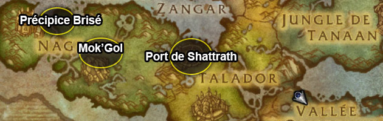

Guide de Draenor à débloquer pour le vol:
1 : Exploration de Draenor2 : La sécurisation de Draenor
3 : Diplomate de Tanaan
4 : Maitre des traditions
5 : Chasseurs de trésors
Les montures :
1: Serre du Vide de l'Etoile Noire
YT tuto

Références Tomtom
2: Faucon des flèches solaires
Les pets :

La sécurisation de Draenor
Le haut-fait Sécurisation de Draenor/Sécurisation de Draenor fait également partie des critères pour obtenir le vol en Draenor.Ce dernier consiste à terminer 12 quêtes journalières d'apogide précises.
Pour rappel, il s'agit des quêtes que vous récupérez sur la table de commandement de votre fief (requiert un fief niveau 2 ou 3).
Ce haut-fait n'est pas lié au compte, vous devez donc accomplir les 12 quêtes listées par le méta haut-fait sur un même personnage.
Chaque jour, une nouvelle quête de cristal apogide vous envoie dans une zone accomplir des objectifs.
Notez que depuis le patch 6.1, vous ne pouvez plus les faire en raid.

Missives de reconnaissance
Vous pouvez le deviner, la difficulté de ce haut-fait consiste à tomber sur la bonne quête journalière.
Heureusement, les missives de reconnaissances peuvent accélérer le processus.
Ces dernières s'achètent contre 200 auprès de Sergent Mors-Sinistre ou Sergent Crowley dans votre fief.
Chacune de ces missives permet d'accomplir une quête journalière d'apogide précise.